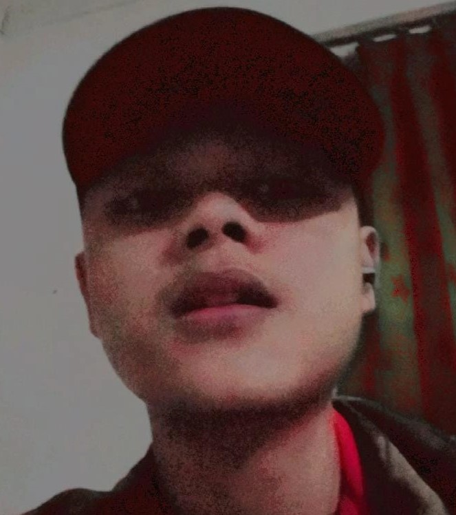

Nama Saya adalah Sidqi Hilman. Saya adalah seorang mahasiswa dari STMIK IKMI Cirebon.sekarang saya masih belajar di semester 2. Motto belajar saya adalah "Kalau yang lain bisa kenapa saya tidak!", dan menurut saya cara terbaik untuk mendapatkan ilmu adalah terus belajar dan mencari.Ini saya kerjakan untuk menyeelesaikan tugas pertemuan 2.
Tentang saya
| No | Sekolah | Jurusan | Tahun |
|---|---|---|---|
| 1 | SMK Karya Nasional Kuningan | Teknik Komputer Jaringan | 2021 |
| 2 | SMPN 2 MANDIRANCAN | - | 2018 |
| 3 | SD Randobaawa iir | - | 2015 |
Demikian Curikulum Vitae saya buat dengan sebenar-benarnya
Sidqi Hilman